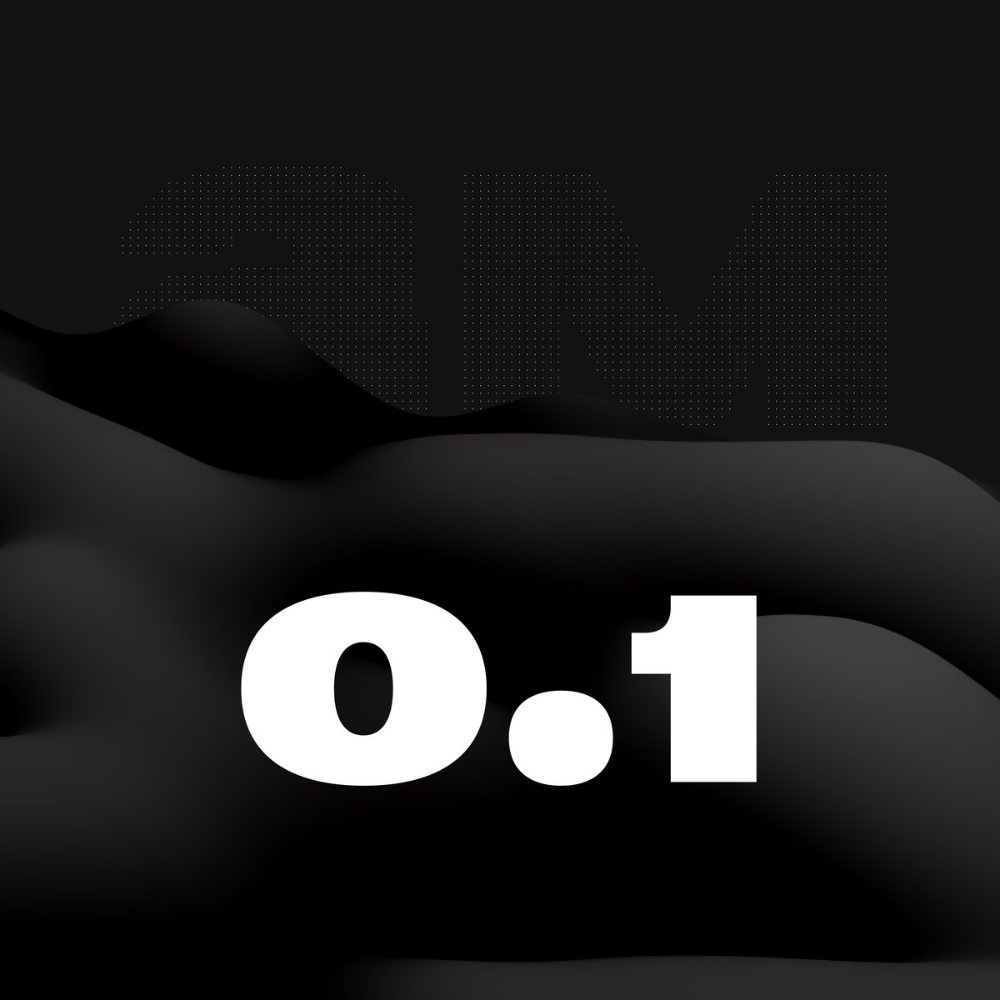
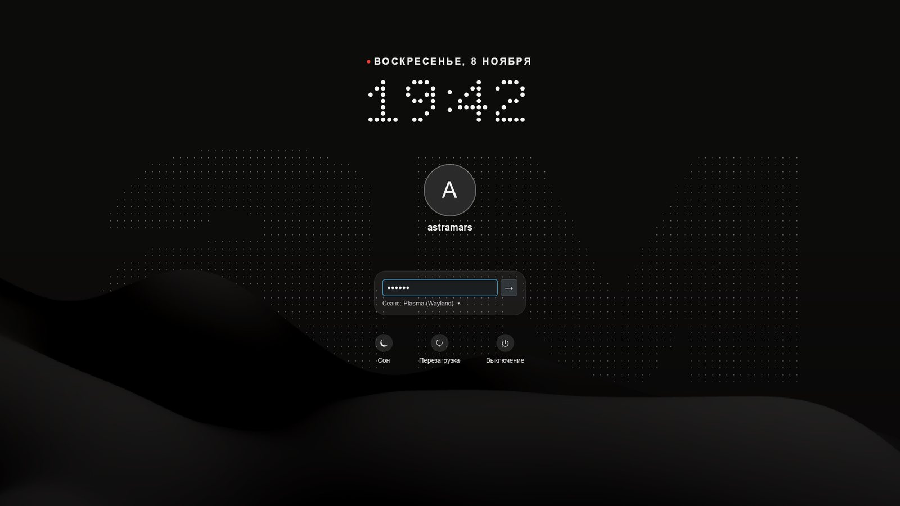
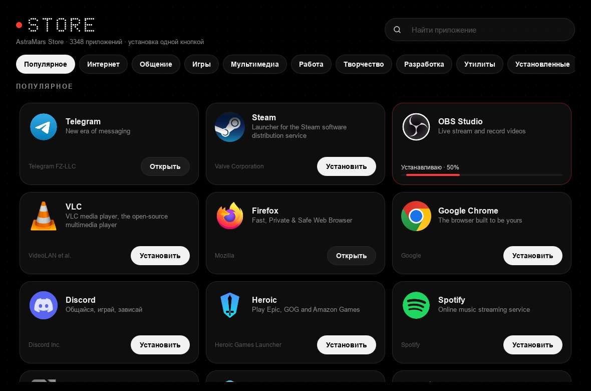
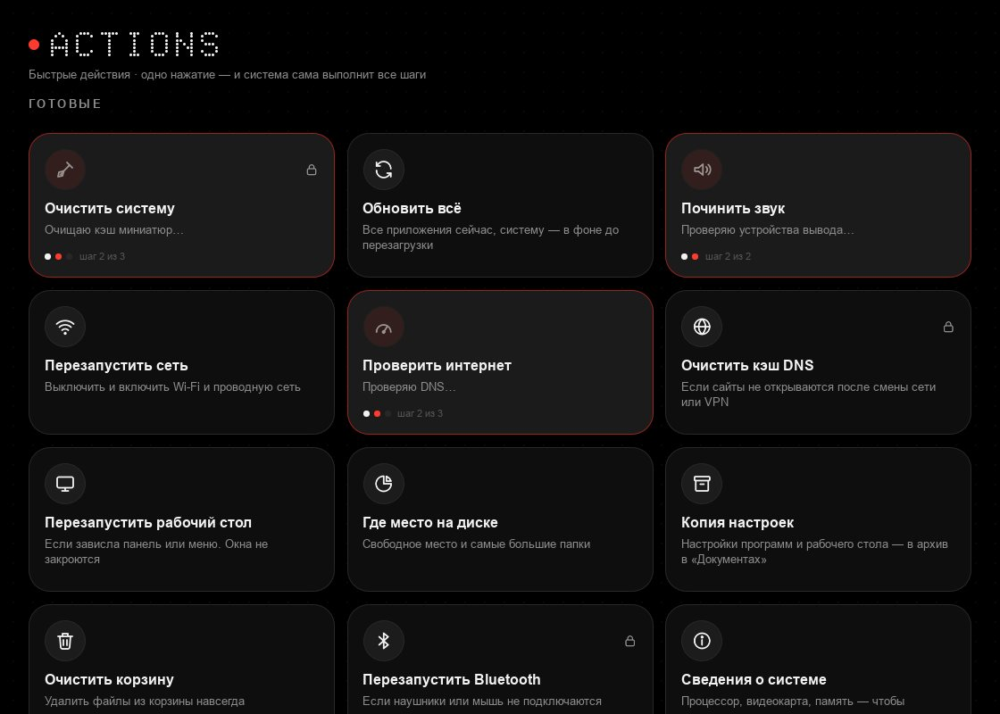
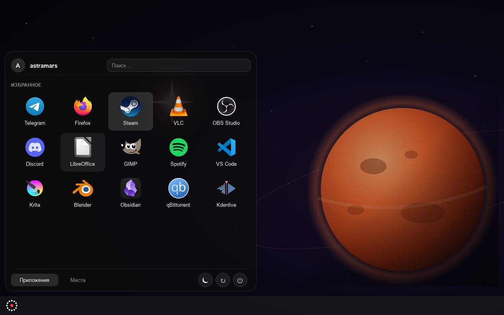
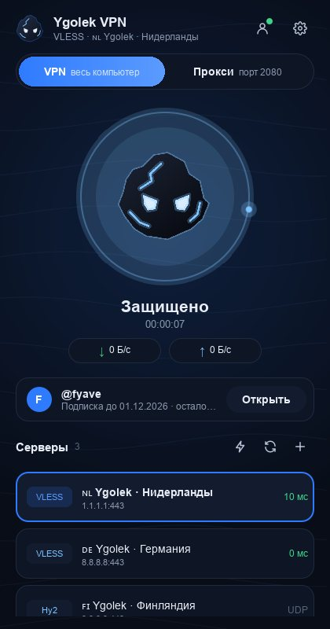
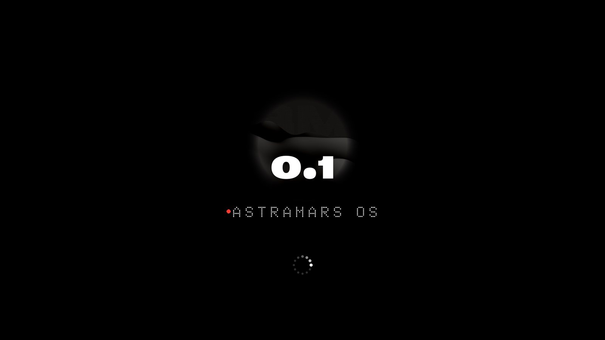

AstraMars Store
Telegram, Steam, Discord, VLC, OBS и тысячи других. «Установить» — и видно, сколько процентов скачалось и с какой скоростью.
Flathub · без пароляОперационная система на Fedora и KDE Plasma. Тёмная и красивая, приложения и обновления — одной кнопкой, а если после обновления что-то сломалось, прошлая версия возвращается одной перезагрузкой.

AstraMars собрана из Fedora Kinoite и своих приложений. Всё подписано по-русски и оформлено в одном стиле.
Telegram, Steam, Discord, VLC, OBS и тысячи других. «Установить» — и видно, сколько процентов скачалось и с какой скоростью.
Flathub · без пароляНовая версия системы скачивается в фоне и включается после перезагрузки. Приложения обновляются там же.
bootc upgradeСистема обновляется целиком, как телефон. Не понравилась новая версия — выберите прошлую при загрузке.
bootc rollbackОчистить систему, починить звук, перезапустить сеть, проверить скорость интернета. И свои цепочки команд.
12 готовыхВстроенный клиент на sing-box: VLESS, Reality, VMess, Trojan, Shadowsocks, Hysteria2, TUIC. Вход в аккаунт через Telegram.
режим VPN и проксиЗапустили Happ или другой клиент в режиме прокси — система сама направит через него обновления, магазин и браузер.
astramars-proxyЧасы как на матричном дисплее, дата сверху, поле пароля на стеклянной подложке. Такой же экран блокировки.
Plasma Login ManagerМеню приложений сеткой, кнопки питания значками, всплывающие окна — чёрное стекло со скруглениями.
стиль Plasma AstraMarsДата сверху, под ней время круглыми точками. Двоеточие мягко мигает, а поле пароля лежит на стекле.

Подборки по разделам и поиск по всему Flathub.

Нажали плитку — система сама проходит все шаги. Видно, какой шаг идёт, итог и подробный журнал.

Стекло с размытием, крупные иконки сеткой, кнопки питания значками. Кнопка меню на панели — кольцо из точек.

Уголёк разгорается синим, когда VPN включён. Подписка подтягивается из аккаунта после входа через Telegram.

Логотип, надпись точками и кольцо с бегущим огоньком вместо стандартной заставки Fedora.

Сначала ставится обычная Fedora Kinoite, потом она одной командой превращается в AstraMars. Дальше всё обновляется кнопкой в магазине.
Файл ISO «OSTree» для Intel и AMD x86_64 с fedoraproject.org, около 3,4 ГБ.
Флешка от 8 ГБ и программа Fedora Media Writer или Rufus. Всё, что было на флешке, сотрётся.
В Windows освободите 50 ГБ («Управление дисками» → «Сжать том»). В установщике выберите разметку «Автоматически» — он займёт свободное место и не тронет Windows.
После первого входа откройте Konsole и выполните:
sudo bootc switch ghcr.io/artem-ne-arteem/astramars-os:latestsystemctl rebootГотово. Дальше обновления — в AstraMars Store, раздел «Обновления».
Если новая версия чем-то не понравилась — выберите предыдущий пункт в меню загрузки или выполните sudo bootc rollback.
В основе — Fedora Kinoite (атомарная Fedora с KDE Plasma). Сверху — своё оформление и приложения AstraMars. AstraMars — независимый проект, а не официальная Fedora.
Бесплатно. Код открыт на GitHub, образ системы собирается автоматически каждый день.
Система обновляется целиком: новая версия ставится рядом со старой. При загрузке можно выбрать прошлую версию, и всё вернётся как было. Ваши файлы при этом не затрагиваются.
Из Flathub — крупнейшего каталога приложений для Linux. В AstraMars Store они ставятся одной кнопкой, а в списке видны описания по-русски.
Да: Steam, Heroic (Epic и GOG), Lutris, Bottles и Prism Launcher для Minecraft есть в разделе «Игры». Кодеки для видео и музыки уже встроены.
Да, если выбрать в установщике автоматическую разметку в свободное место. При включении компьютера появится меню выбора системы. Перед установкой сохраните важные файлы — так стоит делать всегда.